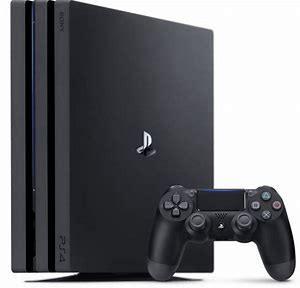
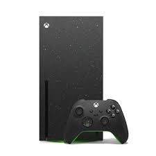
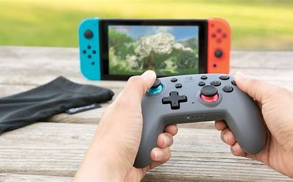

PLAY STATION 5
The PlayStation 5 (PS5) is a powerhouse of a gaming console that offers a range of impressive features. Here are some highlights: - **Ultra-High Speed SSD**: The PS5 boasts lightning-fast load times, thanks to its custom SSD. This means you can spend more time playing and less time waiting for games to load. - **3D Audio**: Experience immersive audio that makes you feel like you're right in the middle of the action. The PS5's 3D audio technology provides a more realistic sound experience. - **Haptic Feedback and Adaptive Triggers**: The DualSense controller offers haptic feedback and adaptive triggers, providing a more tactile and immersive gaming experience. - **Backward Compatibility**: You can play a vast library of PS4 games on the PS5, ensuring you have access to your favorite titles from the previous generation. - **Game Hub and Control Center**: The PS5's user interface includes a Game Hub for each game, collecting everything related to that game in one place. The Control Center allows you to quickly access frequently used features without leaving your game. The PS5 is designed to deliver an incredible gaming experience with its advanced technology and innovative features. Whether you're a casual gamer or a hardcore enthusiast, the PS5 has something to offer.
PLAY STATION 4
The PlayStation 4 (PS4), released in November 2013, is a home video game console developed by Sony Interactive Entertainment and quickly became one of the best-selling consoles of its generation. It features powerful hardware, including an 8-core AMD CPU, a custom AMD Radeon GPU, and 8 GB of GDDR5 RAM, alongside storage options ranging from 500 GB to 2 TB. The DualShock 4 controller introduced enhanced ergonomics, a touchpad, a built-in speaker, and a light bar. The PS4 boasts a user-friendly Dynamic Menu interface, access to the PlayStation Store, and services like PlayStation Now and PlayStation Plus for game streaming and online multiplayer. It supports 1080p gaming, exclusive titles like The Last of Us Part II, God of War, and Spider-Man, and also offers PlayStation VR compatibility. The console provides 4K video streaming, Blu-ray playback, and apps like Netflix and YouTube. While not backward compatible with PS3 discs, it offers many PS3 games digitally. The PS4 Pro, launched in 2016, supports 4K gaming and enhanced performance, while the PS4 Slim version is a more compact, energy-efficient model. The PS4's combination of robust hardware, exclusive games, and online services helped it define the gaming landscape of the 2010s and maintain its popularity even with the release of newer consoles like the PS5.
X BOX
The Xbox One, released in November 2013 by Microsoft, is a powerful home video game console that has undergone several revisions, including the Xbox One S (released in 2016) and the Xbox One X (released in 2017). The console features a custom 8-core AMD CPU, a GPU capable of delivering 1.31 teraflops of performance, and 8 GB of DDR3 RAM, with storage options ranging from 500 GB to 2 TB. The Xbox One Controller offers improved ergonomics, responsive triggers, and an optional Bluetooth connection for wireless gaming. The Xbox One runs on a sleek, easy-to-navigate interface with access to the Microsoft Store and integration with services like Xbox Live for online multiplayer, and Xbox Game Pass for a vast library of games on demand. It supports 1080p gaming and has exclusive titles such as Halo 5: Guardians, Forza Horizon 4, and Gears of War 4. The console also includes 4K Ultra HD streaming, Blu-ray playback, and popular media apps like Netflix, YouTube, and Spotify. With its backward compatibility, players can enjoy a range of Xbox 360 and original Xbox titles on the Xbox One. The Xbox One X provides enhanced graphics with 4K resolution and improved performance for select games. The Xbox One S offers a more compact design and 4K video streaming support. Known for its strong online services, multimedia capabilities, and robust gaming library, the Xbox One has solidified itself as a key player in the gaming market, offering a versatile entertainment hub that remains relevant even as the next-generation Xbox Series X and Series S emerge.
NINTENDO
The Nintendo Switch, released in March 2017, is a hybrid gaming console developed by Nintendo that combines the best of both handheld and home gaming experiences. The Switch features a custom NVIDIA Tegra processor, 4 GB of RAM, and storage options of 32 GB, expandable via microSD cards. Its standout feature is its versatility: the console can be used as a traditional home console when docked to the TV or as a portable handheld device, offering seamless gameplay on the go. The Joy-Con controllers are detachable, allowing for versatile play styles, including motion controls and local multiplayer gaming. The Nintendo Switch's user interface is simple and intuitive, providing access to the Nintendo eShop for digital downloads and exclusive games like The Legend of Zelda: Breath of the Wild, Super Mario Odyssey, and Animal Crossing: New Horizons. While it supports 1080p resolution when docked, it can display up to 720p in handheld mode. The Switch offers a range of multiplayer experiences through Nintendo Switch Online, which provides online gaming, cloud saves, and access to classic NES and SNES games. The Switch Lite, released in 2019, is a more affordable, purely handheld version of the console. Known for its family-friendly approach and unique game library, the Nintendo Switch stands out for its ability to cater to both casual and hardcore gamers, with exclusive titles and a growing library of third-party games, making it a versatile and highly popular console.